# 核心可视化包
library(ggplot2)
library(dplyr)
library(tidyr)
library(patchwork)
# 机器学习包
library(caret)
library(pROC)
# 设置主题
theme_set(theme_bw(base_size = 12))机器学习可视化完全指南
可视化教程
机器学习
模型评估
机器学习可视化概述
机器学习可视化是理解模型性能、诊断问题和展示结果的关键工具。本教程涵盖从数据探索到模型评估的完整可视化流程。
可视化在ML各阶段的作用
| 阶段 | 可视化目标 | 常用图表 |
|---|---|---|
| 数据探索 | 理解数据分布和关系 | 直方图、散点图、相关矩阵 |
| 模型训练 | 监控训练过程 | 学习曲线、损失曲线 |
| 模型评估 | 评估预测性能 | ROC曲线、混淆矩阵 |
| 模型解释 | 理解模型决策 | 特征重要性、SHAP图 |
安装与加载
第一部分：混淆矩阵可视化
混淆矩阵是分类模型评估的基础，展示了预测结果与实际标签的对应关系。
二分类混淆矩阵
# 创建示例预测结果
set.seed(42)
n <- 200
actual <- factor(sample(c("阳性", "阴性"), n, replace = TRUE, prob = c(0.3, 0.7)))
predicted <- actual
# 添加一些错误预测
wrong_idx <- sample(1:n, 30)
predicted[wrong_idx] <- factor(ifelse(predicted[wrong_idx] == "阳性", "阴性", "阳性"),
levels = c("阳性", "阴性")
)
# 计算混淆矩阵
conf_matrix <- table(Predicted = predicted, Actual = actual)
print(conf_matrix) Actual
Predicted 阳性 阴性
阳性 61 20
阴性 10 109# 转换为数据框用于ggplot
conf_df <- as.data.frame(conf_matrix)
# 热图可视化
ggplot(conf_df, aes(x = Actual, y = Predicted, fill = Freq)) +
geom_tile(color = "white", linewidth = 1) +
geom_text(aes(label = Freq), size = 8, fontface = "bold") +
scale_fill_gradient(low = "#e0e7ff", high = "#4f46e5") +
labs(
title = "混淆矩阵热图",
subtitle = "二分类模型预测结果",
x = "实际类别", y = "预测类别"
) +
theme(
legend.position = "none",
axis.text = element_text(size = 12)
)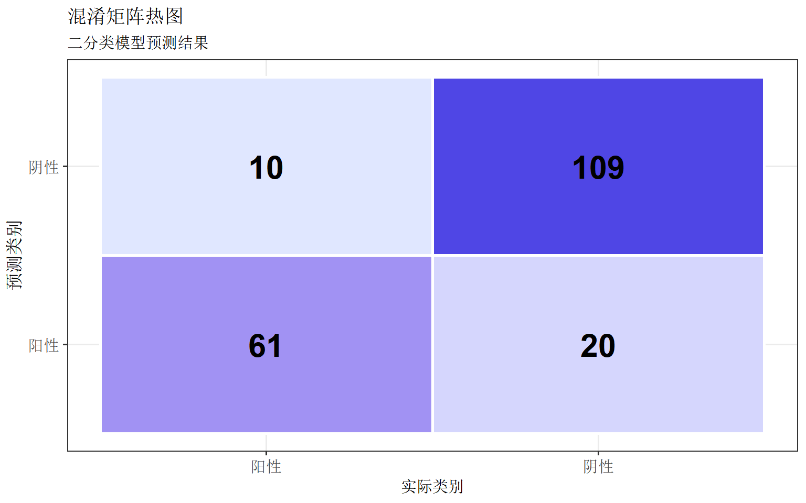
带百分比的混淆矩阵
# 计算百分比
conf_df$Percentage <- round(conf_df$Freq / sum(conf_df$Freq) * 100, 1)
conf_df$Label <- paste0(conf_df$Freq, "\n(", conf_df$Percentage, "%)")
# 带注释的混淆矩阵
ggplot(conf_df, aes(x = Actual, y = Predicted, fill = Freq)) +
geom_tile(color = "white", linewidth = 2) +
geom_text(aes(label = Label), size = 6) +
scale_fill_gradient2(
low = "#fee2e2", mid = "#fef3c7", high = "#dcfce7",
midpoint = median(conf_df$Freq)
) +
labs(
title = "带百分比的混淆矩阵",
x = "实际类别", y = "预测类别"
) +
theme(legend.position = "none")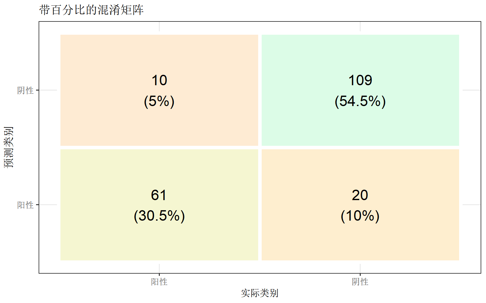
多分类混淆矩阵
# 三分类示例
data(iris)
set.seed(123)
# 简单KNN分类
train_idx <- sample(1:nrow(iris), 100)
train_data <- iris[train_idx, ]
test_data <- iris[-train_idx, ]
# 训练模型
model_knn <- train(Species ~ .,
data = train_data, method = "knn",
trControl = trainControl(method = "cv", number = 5)
)
# 预测
predictions <- predict(model_knn, test_data)
# 多分类混淆矩阵
multi_conf <- table(Predicted = predictions, Actual = test_data$Species)
multi_conf_df <- as.data.frame(multi_conf)
ggplot(multi_conf_df, aes(x = Actual, y = Predicted, fill = Freq)) +
geom_tile(color = "white", linewidth = 1) +
geom_text(aes(label = Freq), size = 6, fontface = "bold") +
scale_fill_gradient(low = "white", high = "#10b981") +
labs(
title = "多分类混淆矩阵",
subtitle = "Iris 数据集 KNN 分类结果"
) +
theme(
legend.position = "none",
axis.text.x = element_text(angle = 45, hjust = 1)
)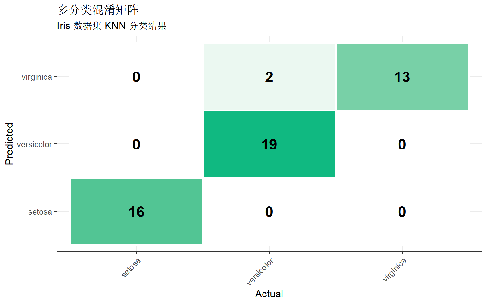
第二部分：ROC曲线与AUC
ROC曲线展示了不同阈值下模型的敏感性和特异性权衡。
单模型ROC曲线
# 创建二分类数据
set.seed(42)
n <- 300
x1 <- rnorm(n)
x2 <- rnorm(n)
prob <- plogis(0.5 + 1.2 * x1 - 0.8 * x2)
y <- rbinom(n, 1, prob)
data_binary <- data.frame(y = factor(y), x1 = x1, x2 = x2)
# 训练逻辑回归
model_glm <- glm(y ~ x1 + x2, data = data_binary, family = "binomial")
pred_prob <- predict(model_glm, type = "response")
# 计算ROC
roc_obj <- roc(data_binary$y, pred_prob)
auc_value <- auc(roc_obj)
# 转换为数据框
roc_df <- data.frame(
sensitivity = roc_obj$sensitivities,
specificity = roc_obj$specificities
)
# 绑制ROC曲线
ggplot(roc_df, aes(x = 1 - specificity, y = sensitivity)) +
geom_line(color = "#4f46e5", linewidth = 1.2) +
geom_abline(slope = 1, intercept = 0, linetype = "dashed", color = "gray50") +
geom_area(alpha = 0.2, fill = "#4f46e5") +
annotate("text",
x = 0.7, y = 0.3,
label = paste0("AUC = ", round(auc_value, 3)),
size = 5, fontface = "bold"
) +
labs(
title = "ROC 曲线",
subtitle = "逻辑回归模型",
x = "1 - 特异性 (假阳性率)",
y = "敏感性 (真阳性率)"
) +
coord_equal()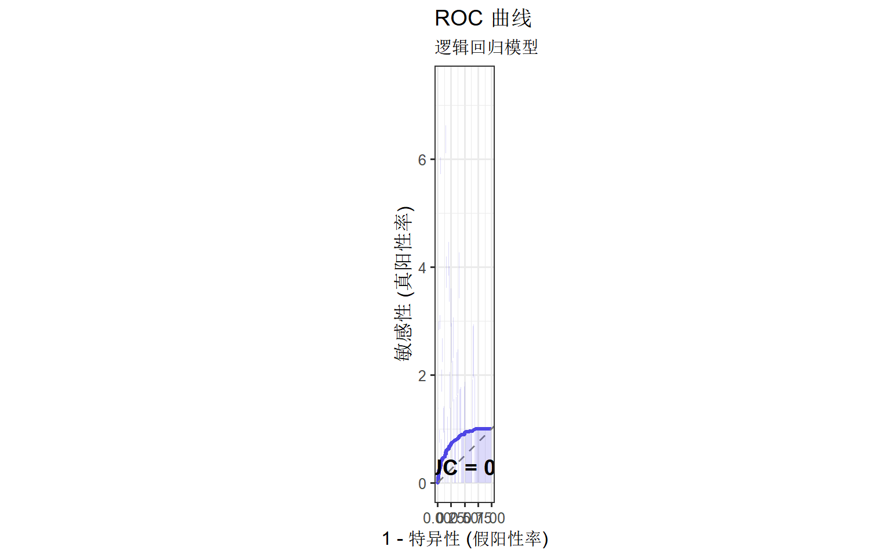
多模型ROC曲线对比
# 训练多个模型
model_glm <- glm(y ~ x1 + x2, data = data_binary, family = "binomial")
model_glm2 <- glm(y ~ x1, data = data_binary, family = "binomial")
# 获取预测概率
prob1 <- predict(model_glm, type = "response")
prob2 <- predict(model_glm2, type = "response")
# 计算ROC
roc1 <- roc(data_binary$y, prob1)
roc2 <- roc(data_binary$y, prob2)
# 合并数据
roc_compare <- rbind(
data.frame(
model = paste0("完整模型 (AUC=", round(auc(roc1), 3), ")"),
sensitivity = roc1$sensitivities,
specificity = roc1$specificities
),
data.frame(
model = paste0("简单模型 (AUC=", round(auc(roc2), 3), ")"),
sensitivity = roc2$sensitivities,
specificity = roc2$specificities
)
)
# 对比图
ggplot(roc_compare, aes(x = 1 - specificity, y = sensitivity, color = model)) +
geom_line(linewidth = 1.2) +
geom_abline(slope = 1, intercept = 0, linetype = "dashed", color = "gray50") +
scale_color_manual(values = c("#4f46e5", "#ef4444")) +
labs(
title = "多模型 ROC 曲线对比",
x = "1 - 特异性", y = "敏感性",
color = "模型"
) +
theme(legend.position = "bottom") +
coord_equal()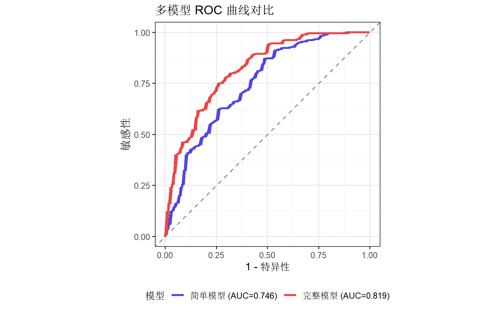
第三部分：学习曲线与验证曲线
学习曲线
学习曲线展示了随着训练样本量增加，模型性能的变化趋势。
# 创建学习曲线数据
set.seed(42)
train_sizes <- seq(20, 250, by = 20)
learning_data <- lapply(train_sizes, function(n) {
# 模拟训练和测试误差
train_error <- 0.05 + 0.3 * exp(-n / 50) + rnorm(1, 0, 0.02)
test_error <- 0.15 + 0.4 * exp(-n / 80) + rnorm(1, 0, 0.03)
data.frame(
sample_size = n,
train_error = max(0, train_error),
test_error = max(0, test_error)
)
})
learning_df <- do.call(rbind, learning_data)
# 转换为长格式
learning_long <- learning_df %>%
pivot_longer(
cols = c(train_error, test_error),
names_to = "type", values_to = "error"
)
# 绑制学习曲线
ggplot(learning_long, aes(x = sample_size, y = error, color = type)) +
geom_line(linewidth = 1.2) +
geom_point(size = 3) +
scale_color_manual(
values = c("#ef4444", "#4f46e5"),
labels = c("测试误差", "训练误差")
) +
labs(
title = "学习曲线",
subtitle = "样本量对模型性能的影响",
x = "训练样本量", y = "误差率",
color = ""
) +
theme(legend.position = "bottom")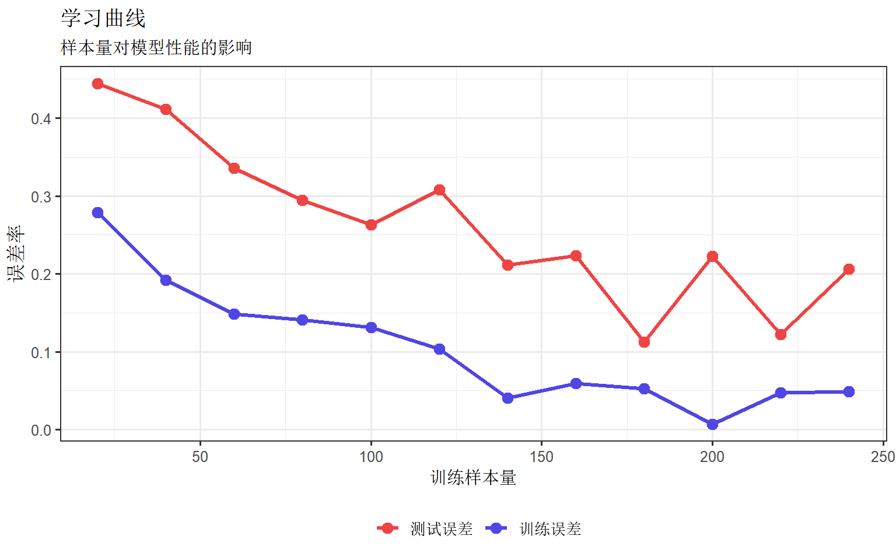
验证曲线
验证曲线展示了超参数对模型性能的影响。
# 创建验证曲线数据
set.seed(42)
k_values <- 1:20
validation_data <- lapply(k_values, function(k) {
# 模拟不同K值的训练和测试误差
train_error <- 0.02 + 0.01 * sqrt(k) + rnorm(1, 0, 0.01)
test_error <- 0.15 - 0.08 * log(k) + 0.02 * k + rnorm(1, 0, 0.02)
data.frame(
k = k,
train_error = max(0, train_error),
test_error = max(0, test_error)
)
})
validation_df <- do.call(rbind, validation_data)
# 转换为长格式
validation_long <- validation_df %>%
pivot_longer(
cols = c(train_error, test_error),
names_to = "type", values_to = "error"
)
# 绑制验证曲线
ggplot(validation_long, aes(x = k, y = error, color = type)) +
geom_line(linewidth = 1.2) +
geom_point(size = 2) +
geom_ribbon(
data = validation_df,
aes(x = k, ymin = train_error, ymax = test_error),
fill = "gray", alpha = 0.2, inherit.aes = FALSE
) +
scale_color_manual(
values = c("#ef4444", "#4f46e5"),
labels = c("测试误差", "训练误差")
) +
labs(
title = "验证曲线 (KNN模型)",
subtitle = "K值对模型性能的影响",
x = "K (邻居数)", y = "误差率",
color = ""
) +
theme(legend.position = "bottom")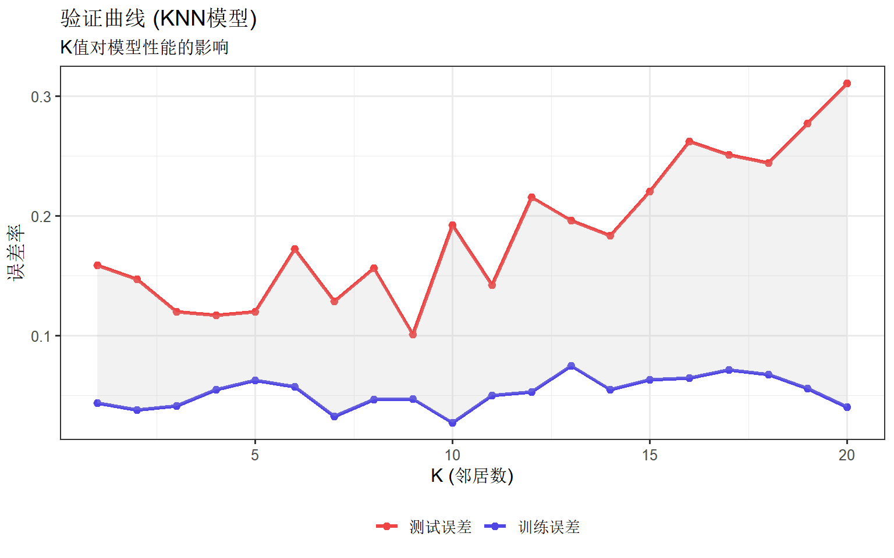
第四部分：特征重要性可视化
变量重要性条形图
# 使用iris数据集训练随机森林
library(randomForest)
set.seed(42)
rf_model <- randomForest(Species ~ ., data = iris, importance = TRUE)
# 提取重要性
importance_df <- data.frame(
variable = rownames(importance(rf_model)),
importance = importance(rf_model)[, "MeanDecreaseGini"]
)
# 排序绑图
ggplot(importance_df, aes(x = reorder(variable, importance), y = importance)) +
geom_col(fill = "#4f46e5", alpha = 0.8) +
geom_text(aes(label = round(importance, 1)), hjust = -0.2, size = 4) +
coord_flip() +
labs(
title = "特征重要性 (随机森林)",
subtitle = "基于 Gini 指数减少量",
x = "", y = "重要性得分"
) +
expand_limits(y = max(importance_df$importance) * 1.15)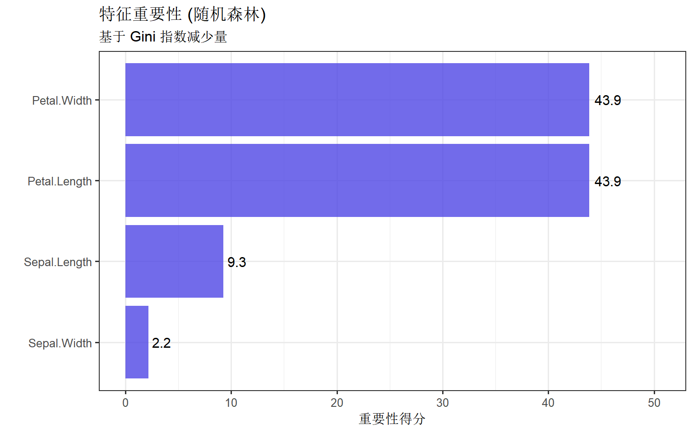
排列重要性可视化
# 模拟排列重要性结果（含误差棒）
set.seed(42)
perm_importance <- data.frame(
variable = c("Petal.Length", "Petal.Width", "Sepal.Length", "Sepal.Width"),
importance = c(0.42, 0.35, 0.15, 0.08),
std = c(0.05, 0.04, 0.03, 0.02)
)
ggplot(perm_importance, aes(x = reorder(variable, importance), y = importance)) +
geom_col(fill = "#10b981", alpha = 0.8, width = 0.7) +
geom_errorbar(aes(ymin = importance - std, ymax = importance + std),
width = 0.2, color = "#064e3b", linewidth = 0.8
) +
coord_flip() +
labs(
title = "排列重要性",
subtitle = "误差棒表示10次排列的标准差",
x = "", y = "准确率下降"
) +
theme(panel.grid.major.y = element_blank())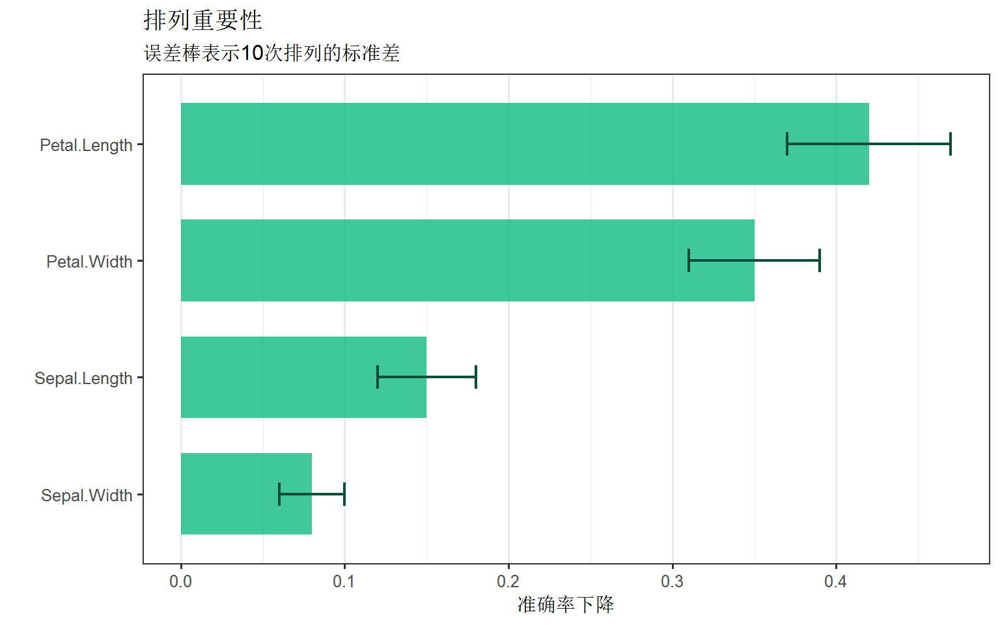
双重要性对比图
# 对比两种重要性指标
dual_importance <- data.frame(
variable = rep(c("Petal.Length", "Petal.Width", "Sepal.Length", "Sepal.Width"), 2),
type = rep(c("Gini重要性", "排列重要性"), each = 4),
importance = c(40, 35, 12, 8, 42, 35, 15, 8)
)
ggplot(dual_importance, aes(x = variable, y = importance, fill = type)) +
geom_col(position = "dodge", alpha = 0.8) +
scale_fill_manual(values = c("#4f46e5", "#10b981")) +
labs(
title = "双重要性指标对比",
x = "", y = "重要性得分", fill = ""
) +
theme(
legend.position = "bottom",
axis.text.x = element_text(angle = 45, hjust = 1)
)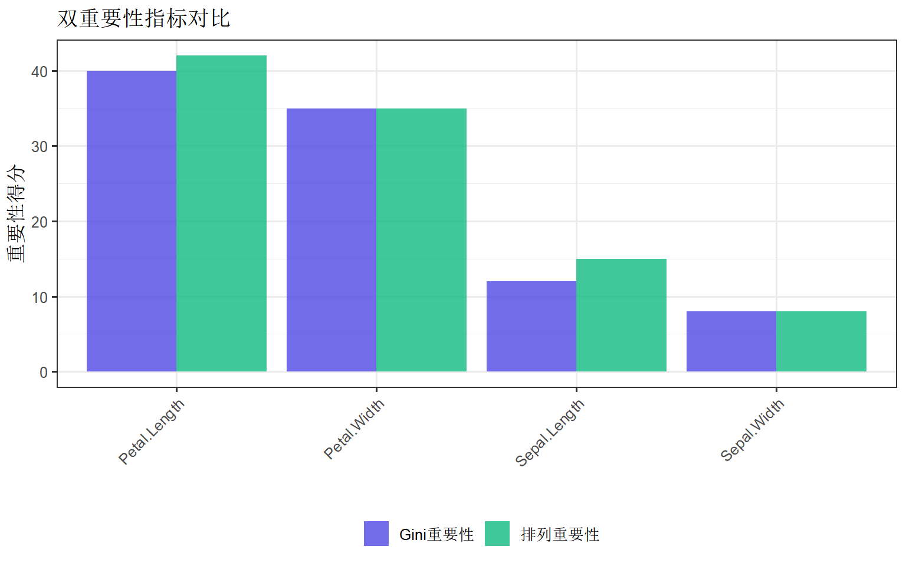
第五部分：回归模型可视化
残差图分析
# 拟合回归模型
data(mtcars)
model_lm <- lm(mpg ~ hp + wt + qsec, data = mtcars)
# 残差分析数据
residual_df <- data.frame(
fitted = fitted(model_lm),
residuals = residuals(model_lm),
std_residuals = rstandard(model_lm)
)
# 残差vs拟合值
p1 <- ggplot(residual_df, aes(x = fitted, y = residuals)) +
geom_point(color = "#4f46e5", size = 2, alpha = 0.7) +
geom_hline(yintercept = 0, linetype = "dashed", color = "red") +
geom_smooth(method = "loess", se = FALSE, color = "#10b981") +
labs(
title = "残差 vs 拟合值",
x = "拟合值", y = "残差"
)
# 标准化残差分布
p2 <- ggplot(residual_df, aes(x = std_residuals)) +
geom_histogram(aes(y = after_stat(density)),
bins = 15,
fill = "#4f46e5", alpha = 0.7
) +
geom_density(color = "#ef4444", linewidth = 1) +
labs(
title = "标准化残差分布",
x = "标准化残差", y = "密度"
)
p1 + p2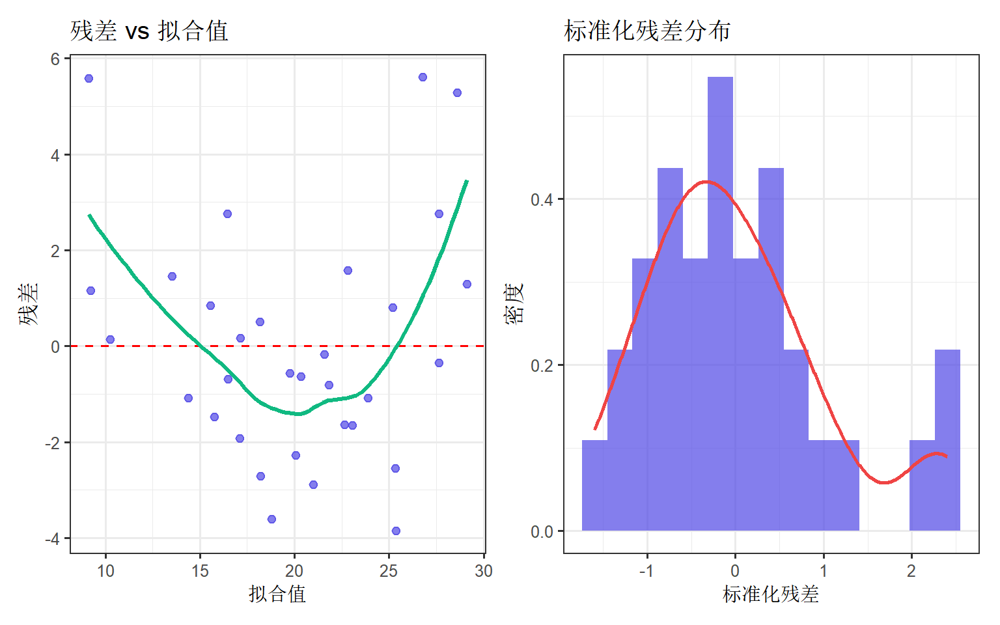
QQ图
# QQ图检验残差正态性
ggplot(residual_df, aes(sample = std_residuals)) +
stat_qq(color = "#4f46e5", size = 2) +
stat_qq_line(color = "#ef4444", linewidth = 1) +
labs(
title = "残差 QQ 图",
subtitle = "检验残差正态性假设",
x = "理论分位数", y = "样本分位数"
)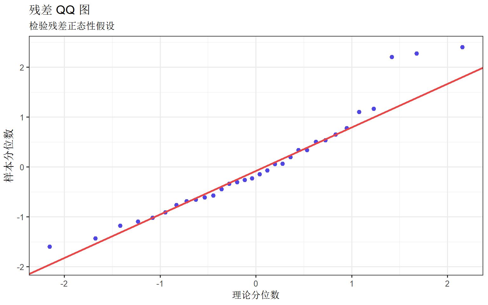
预测vs实际散点图
# 预测值与实际值对比
pred_actual <- data.frame(
actual = mtcars$mpg,
predicted = fitted(model_lm)
)
# 计算R方
r_squared <- summary(model_lm)$r.squared
ggplot(pred_actual, aes(x = actual, y = predicted)) +
geom_point(color = "#4f46e5", size = 3, alpha = 0.7) +
geom_abline(slope = 1, intercept = 0, linetype = "dashed", color = "red") +
annotate("text",
x = min(pred_actual$actual) + 2,
y = max(pred_actual$predicted) - 1,
label = paste0("R² = ", round(r_squared, 3)),
size = 5, fontface = "bold"
) +
labs(
title = "预测值 vs 实际值",
subtitle = "红色虚线为完美预测线",
x = "实际值", y = "预测值"
) +
coord_equal()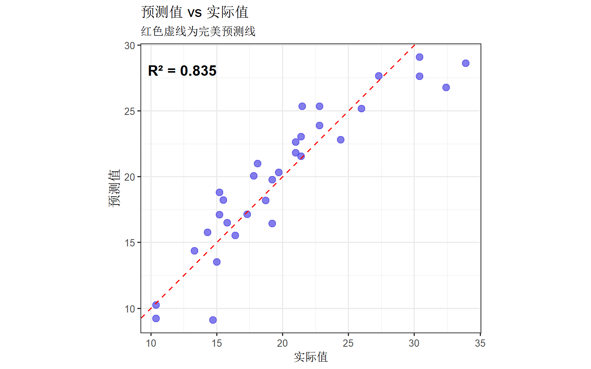
第六部分：模型比较可视化
模型性能箱线图
# 模拟交叉验证结果
set.seed(42)
cv_results <- data.frame(
model = rep(c("逻辑回归", "随机森林", "SVM", "KNN", "XGBoost"), each = 10),
accuracy = c(
rnorm(10, 0.78, 0.03),
rnorm(10, 0.85, 0.02),
rnorm(10, 0.82, 0.03),
rnorm(10, 0.76, 0.04),
rnorm(10, 0.87, 0.02)
)
)
ggplot(cv_results, aes(
x = reorder(model, accuracy, FUN = median),
y = accuracy, fill = model
)) +
geom_boxplot(alpha = 0.8, show.legend = FALSE) +
geom_jitter(width = 0.1, alpha = 0.5, size = 2) +
scale_fill_brewer(palette = "Set2") +
labs(
title = "模型性能对比 (10折交叉验证)",
x = "模型", y = "准确率"
) +
coord_flip() +
theme(panel.grid.major.y = element_blank())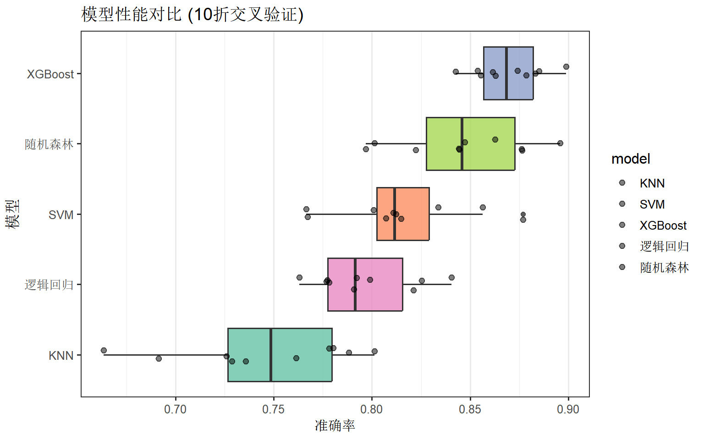
多指标雷达图
# 多指标对比数据
metrics <- data.frame(
model = c("逻辑回归", "随机森林", "XGBoost"),
Accuracy = c(0.78, 0.85, 0.87),
Precision = c(0.75, 0.83, 0.85),
Recall = c(0.72, 0.80, 0.82),
F1 = c(0.73, 0.81, 0.83),
AUC = c(0.81, 0.89, 0.91)
)
# 转换为长格式
metrics_long <- metrics %>%
pivot_longer(-model, names_to = "metric", values_to = "value")
# 热图形式展示
ggplot(metrics_long, aes(x = metric, y = model, fill = value)) +
geom_tile(color = "white", linewidth = 1) +
geom_text(aes(label = round(value, 2)), size = 5, fontface = "bold") +
scale_fill_gradient(low = "#fee2e2", high = "#22c55e") +
labs(
title = "模型性能指标对比",
x = "评估指标", y = "模型"
) +
theme(legend.position = "none")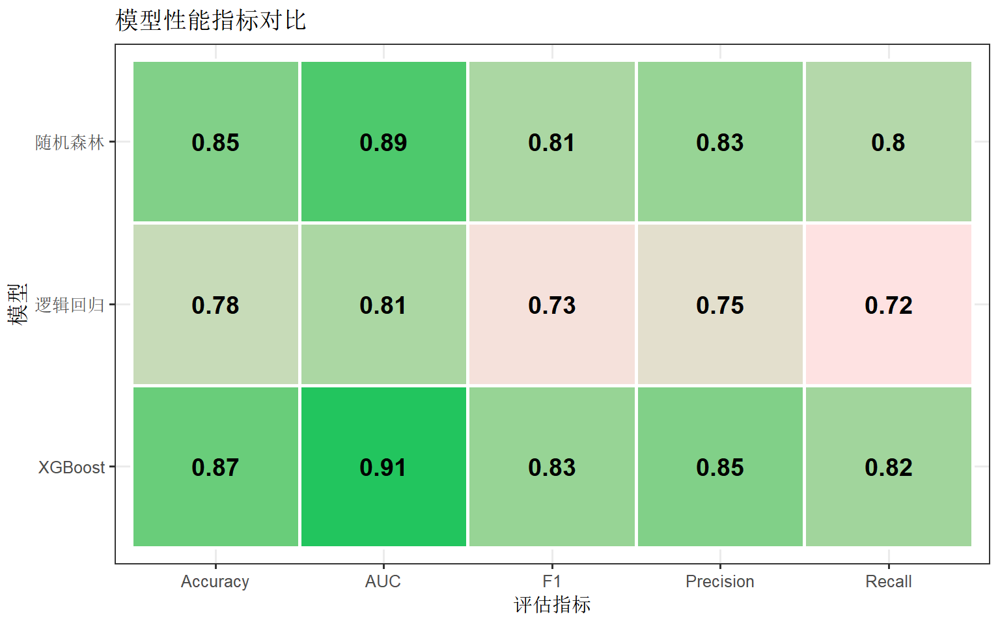
条形图多指标对比
ggplot(metrics_long, aes(x = metric, y = value, fill = model)) +
geom_col(position = "dodge", alpha = 0.8) +
scale_fill_manual(values = c("#4f46e5", "#10b981", "#ef4444")) +
labs(
title = "多指标模型性能对比",
x = "评估指标", y = "得分", fill = "模型"
) +
theme(legend.position = "bottom") +
ylim(0, 1)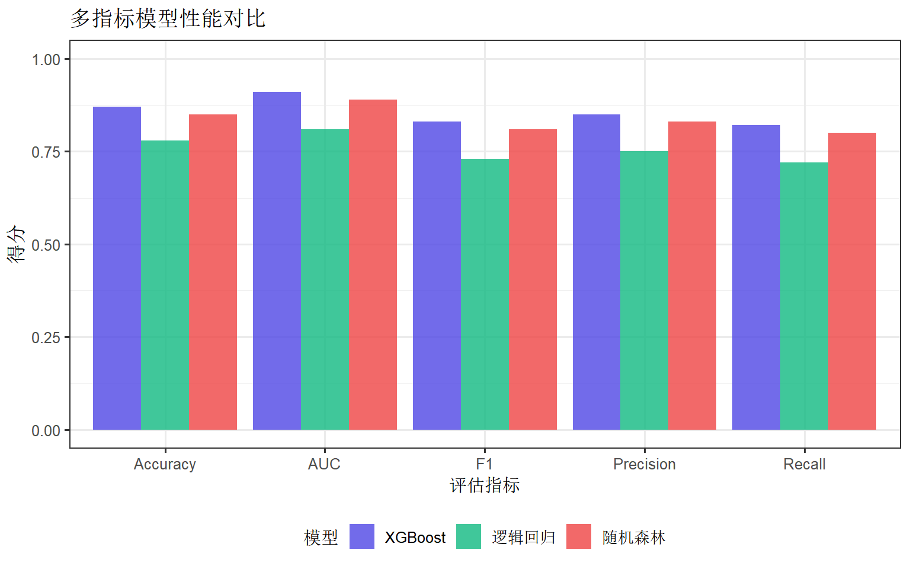
第七部分：决策边界可视化
二分类决策边界
# 创建简单二分类数据
set.seed(42)
n <- 200
class1 <- data.frame(
x = rnorm(n / 2, mean = 2, sd = 1),
y = rnorm(n / 2, mean = 2, sd = 1),
class = "A"
)
class2 <- data.frame(
x = rnorm(n / 2, mean = 4, sd = 1),
y = rnorm(n / 2, mean = 4, sd = 1),
class = "B"
)
decision_data <- rbind(class1, class2)
decision_data$class <- factor(decision_data$class)
# 训练逻辑回归
model_decision <- glm(class ~ x + y, data = decision_data, family = "binomial")
# 创建网格
x_range <- seq(min(decision_data$x) - 1, max(decision_data$x) + 1, length.out = 100)
y_range <- seq(min(decision_data$y) - 1, max(decision_data$y) + 1, length.out = 100)
grid <- expand.grid(x = x_range, y = y_range)
# 预测网格点
grid$prob <- predict(model_decision, newdata = grid, type = "response")
grid$pred <- factor(ifelse(grid$prob > 0.5, "B", "A"))
# 绘制决策边界
ggplot() +
geom_tile(data = grid, aes(x = x, y = y, fill = prob), alpha = 0.5) +
geom_contour(
data = grid, aes(x = x, y = y, z = prob),
breaks = 0.5, color = "black", linewidth = 1
) +
geom_point(
data = decision_data, aes(x = x, y = y, color = class),
size = 2, alpha = 0.8
) +
scale_fill_gradient2(
low = "#4f46e5", mid = "white", high = "#ef4444",
midpoint = 0.5
) +
scale_color_manual(values = c("A" = "#4f46e5", "B" = "#ef4444")) +
labs(
title = "逻辑回归决策边界",
subtitle = "黑线为决策边界 (P=0.5)",
x = "特征 X", y = "特征 Y",
fill = "预测概率", color = "类别"
) +
theme(legend.position = "right")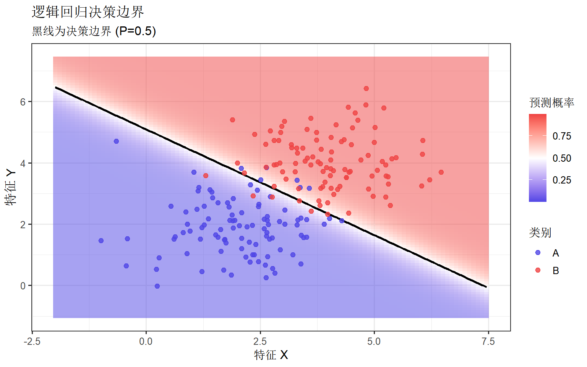
第八部分：交叉验证结果可视化
折线图展示CV结果
# 模拟K折交叉验证结果
set.seed(42)
cv_folds <- data.frame(
fold = 1:10,
train_acc = rnorm(10, 0.88, 0.02),
test_acc = rnorm(10, 0.82, 0.03)
)
cv_long <- cv_folds %>%
pivot_longer(-fold, names_to = "type", values_to = "accuracy")
ggplot(cv_long, aes(x = fold, y = accuracy, color = type)) +
geom_line(linewidth = 1) +
geom_point(size = 3) +
geom_hline(
yintercept = mean(cv_folds$test_acc),
linetype = "dashed", color = "gray50"
) +
annotate("text",
x = 8, y = mean(cv_folds$test_acc) + 0.01,
label = paste("平均:", round(mean(cv_folds$test_acc), 3))
) +
scale_color_manual(
values = c("#ef4444", "#4f46e5"),
labels = c("测试集", "训练集")
) +
labs(
title = "10折交叉验证结果",
x = "折数", y = "准确率", color = ""
) +
theme(legend.position = "bottom")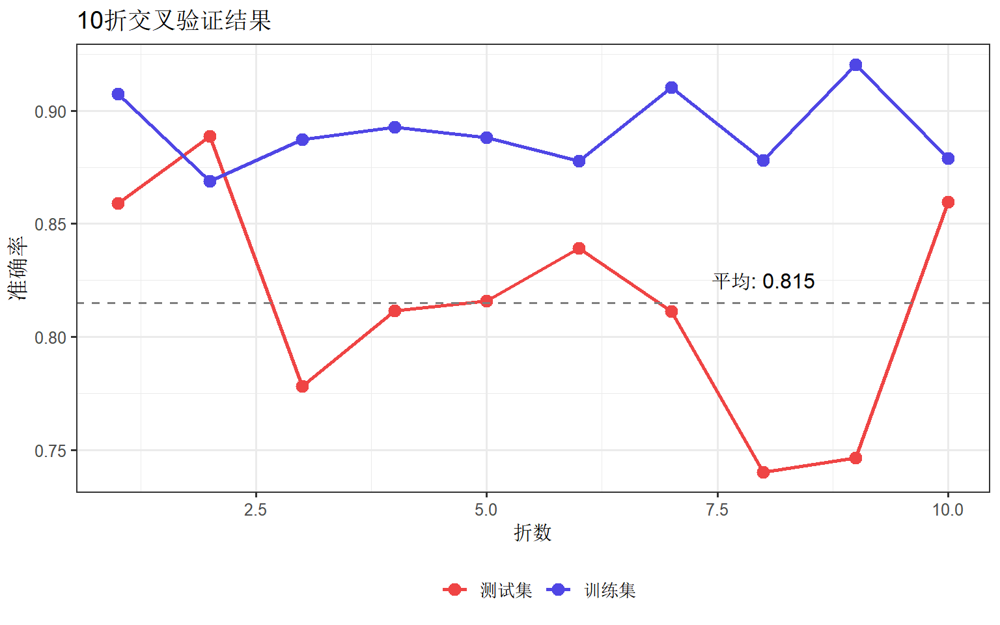
常用代码速查
# ===== 混淆矩阵热图 =====
library(ggplot2)
conf_df <- as.data.frame(table(Predicted = pred, Actual = actual))
ggplot(conf_df, aes(x = Actual, y = Predicted, fill = Freq)) +
geom_tile() +
geom_text(aes(label = Freq))
# ===== ROC曲线 =====
library(pROC)
roc_obj <- roc(actual, pred_prob)
plot(roc_obj)
auc(roc_obj)
# ===== 特征重要性 =====
library(randomForest)
rf <- randomForest(y ~ ., data, importance = TRUE)
importance(rf)
varImpPlot(rf)
# ===== 残差诊断 =====
model <- lm(y ~ x, data)
plot(fitted(model), residuals(model))
qqnorm(residuals(model))
# ===== 学习曲线 =====
# 循环不同训练集大小
# 记录训练和测试误差
# 绑制折线图
# ===== 模型对比箱线图 =====
ggplot(cv_results, aes(x = model, y = accuracy, fill = model)) +
geom_boxplot()小结
机器学习可视化的六大核心图表：
| 图表 | 用途 | 关键洞察 |
|---|---|---|
| 混淆矩阵 | 分类评估 | 各类别预测准确性 |
| ROC曲线 | 阈值选择 | 敏感性/特异性权衡 |
| 学习曲线 | 诊断过/欠拟合 | 需要更多数据? |
| 特征重要性 | 模型解释 | 哪些变量最重要 |
| 残差图 | 回归诊断 | 模型假设是否满足 |
| 模型对比图 | 选择最佳模型 | 综合性能评估 |
最佳实践：好的ML可视化不仅展示结果，更能帮助发现问题、指导模型改进。
参考资源
- caret 包文档
- pROC 包文档
- scikit-learn 可视化指南（Python，但思路相通）
- Interpretable Machine Learning